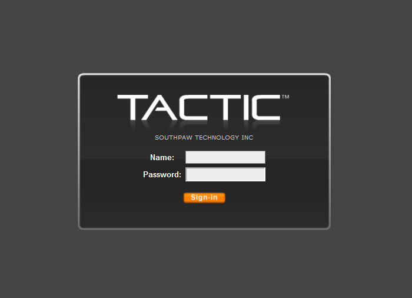
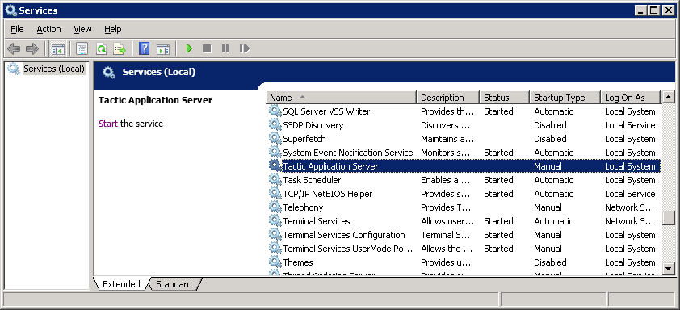
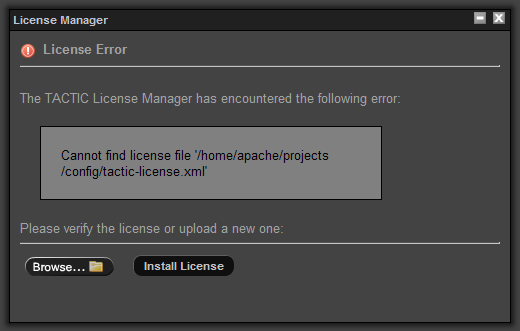
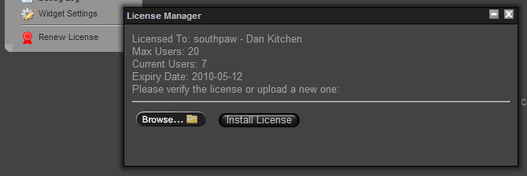

This document guides you through the general installation of TACTIC in Fedora Linux with some brief background information. For installation on Windows or CentOS, please refer to the corresponding sections in this book. To completely install TACTIC, there are three main components that have to be set up in the following order:
- A Database
- The TACTIC Installer
- A Web Server
TACTIC stores all metadata in a database called PostgreSQL. This is an industrial strength, hugely scalable database that has proven itself in thousands of industries around the world. We currently recommend 8.4 and upwards for ease of installation. Go to the PostgreSQL website for more information.
rpm -Uvh http://yum.pgrpms.org/reporpms/8.4/pgdg-fedora-8.4-2.noarch.rpm
yum install postgresql postgresql-server postgresql-contrib postgresql-devel
It is located in /var/lib/pgsql/data This file determines all of the user permissions for PostgreSQL. To begin with, turn on all of the permissions contained in this file. This is a temporary measure that will greatly simplify the installation process. You may lock down these permissions at a later date. Please consult the PostgreSQL documentation on how to do this. TACTIC ships with a sample "pg_hba.conf" file (located in <TACTIC_unzipped_ package>/src/install/postgresql/pg_hba.conf). This file has an open security setting for ease of installation. It’s best to back up your current pg_hba.conf file before copying over with the file provided by TACTIC.
Restart the PostgreSQL Service
Verification
Verify that psql works in the command prompt:
> psql -U postgres template1
It should give you a prompt:
template1=#
If you see this prompt without the need to enter a password, you have successfully installed the PostgreSQL database. Type \q to exit.
Install Python and supporting modules
The TACTIC source code is written in Python. As such, the complete codebase is open.
To install Python, you can find an msi at http://www.python.org. TACTIC requires Python 2.6 or higher.
TACTIC also requires a number of Python modules to function correctly. These modules are generally not installed by default with the standard Python distributions. For Windows, they are already packaged in a file python_modules.zip available for download in the release section of the downloads page at http://support.southpawtech.com/downloads
PIL 1.1.7
(Python Image Library) * ImageMagick 6.7.8
(A command line program which complements PIL) -
http://www.imagemagick.org * FFmpeg version 0.6(Solution to record, convert and stream audio and video and metadata parsing) - http://www.ffmpeg.org * psycopg2 2.3.1
(Database connectivity) * PyCrypto version 2.0.1/2.1
(For de-encrypting the license file) -
http://www.amk.ca/python/code/crypto * simplejson 2.1.1 (not needed since Python 2.6)
simplejson.egg can be installed with the EasyInstaller. It is need for JSON string encoding and parsing * lxml 2.1 or 2.2
(XML and XPath processing)
Unzip the file in a temporary location.
# cd /tmp # unzip tactic_#.#.#.#.zip
Go to /tmp/tactic_#../src/install/
# cd /tmp/tactic_#.#.#.#/src/install
Execute: install.py
Note
You must invoke the installation with root user privileges because it attempts to write to the <python_install>/site-packages directory.
# su # python install.py
The installer will ask a number of questions. First it ask for the <TACTIC_BASE_DIR>:
Please enter the base path of the TACTIC installation: (/home/apache) ->
Enter the user the Apache Web Server is run under.
Please enter the user Apache Web Server is run under: (apache) ->
It would copy the source code to the base path and create a symbolic link to it. An Apache Web Server file will be generated at the end which you would need to copy to the Apache config area upon installation of the web server. If there are existing files in the destination directory the installer will ask for your confirmation to remove it. At the end, you will see this:
*** Installation of TACTIC completed at [/home/apache] *** Next, please install the Apache Web Server and then copy the Apache config extension [/home/apache/tactic_data/config/tactic.conf] to the Apache web server config area. e.g. /etc/httpd/conf.d/
Verification
When the installation is completed, an asset directory will be created at <TACTIC_DATA_DIR>/assets.
The file tactic_paths.py will be created in the following directories:
Linux | [multiblock cell omitted] |
Network machine access
If you are on the server, you can access it by using the URL http://localhost/tactic. For other people to access it on the network, you need to find out its IP address. In a linux server, you can use the command "ifconfig" to locate it. It’s the one listed as the inet addr.
Next, you need to run TACTIC behind Apache.
TACTIC should be run behind an Apache web server. You can download Apache software at http://www.apache.org/
The TACTIC application server is able to serve up static content such as images, PDF files, Quicktime files, and so on, but it is not the most efficient at this because it is written in Python. This is what Apache is designed for. By running TACTIC behind Apache, it relieves TACTIC from serving the static content so that it can focus on the dynamic content.
For production use, it is highly recommended that TACTIC is run behind the Apache server. This has many scalability advantages. When running behind Apache, Apache uses a reverse proxy and proxy balancer module to forward requests to communicate with TACTIC.
Linux
After the installation, some changes may need to be made in the "httpd.conf" file for Apache.
Fedora Core: /etc/httpd/conf/httpd.conf
Make sure the following lines are uncommented:
LoadModule rewrite_module modules/mod_rewrite.so LoadModule proxy_module modules/mod_proxy.so LoadModule proxy_http_module modules/mod_proxy_http.so LoadModule proxy_balancer_module modules/mod_proxy_balancer.so LoadModule deflate_module modules/mod_deflate.so
These lines may already be uncommented, depending on your distribution and version of Apache. You need Apache version 2.0.31 or later.
The TACTIC installer generates an Apache extension conf file on completion. Copy that file to a directory that is recognized by Apache.
For Fedora Core: copy the TACTIC generate Apache conf extension file to the following directory:
/etc/httpd/conf.d/
If there is no such configuration extension folder, you must add the following line to the "httpd.conf" file so that it will read the extension configuration file provided by the installer:
Include conf/tactic_win32.conf
Web Server configuration
In our provided file:
tactic.conf
Make sure the following lines exist:
# Using the ProxyPass directives ProxyPreserveHost on <Proxy balancer://tactic> BalancerMember http://localhost:8081/tactic BalancerMember http://localhost:8082/tactic BalancerMember http://localhost:8083/tactic </Proxy> ProxyPass /tactic balancer://tactic ProxyPass /tactic_data balancer://tactic
Note
Warning: For load balancing, only use either:
\1) the Proxy Balancer method (recommended)
or
\2) the RewriteRule method (not recommended).
Do not use both methods at the same time.
Note
For configuring load-balancing set-up in a real production, please refer to the Load Balancing section in the Sys-admin docs.
Note
When trying to set up Apache on a Windows Server, to specify a share folder for Apache to use, you may need to include the name of the share folder in the path.
For example, use the following if you have named the share folder "my_share":
Alias /assets "//10.0.0.17/my_share/assets"
Finally, after verifying the configuration is correct, restart the Apache service:
service httpd restart
Go to the "<TACTIC_INSTALL_DIR>/src/bin" folder
`cd /home/apache/tactic/src/bin `
Then su as the user apache is run as:
su apache
python startup_dev.py
This "startup_dev.py" script is the development script which will dump output to the screen. The other startup script "startup.py" is the production start-up script and will dump output to a log file. The development start-up script is also much slower as it monitors the file system to see if any files have changed.
The output would look like the following:
Registering site ... admin Registering site ... default Registering site ... test Registering site ... my_project Starting TACTIC ... 05/Jul/2007:11:16:29 CONFIG INFO Server parameters: 05/Jul/2007:11:16:29 CONFIG INFO server.environment: development 05/Jul/2007:11:16:29 CONFIG INFO server.log_to_screen: True 05/Jul/2007:11:16:29 CONFIG INFO server.log_file: D:/tactic_temp/log/tactic_log 05/Jul/2007:11:16:29 CONFIG INFO server.log_tracebacks: True 05/Jul/2007:11:16:29 CONFIG INFO server.log_request_headers: True 05/Jul/2007:11:16:29 CONFIG INFO server.protocol_version: HTTP/1.0 05/Jul/2007:11:16:29 CONFIG INFO server.socket_host: 05/Jul/2007:11:16:29 CONFIG INFO server.socket_port: 8081 05/Jul/2007:11:16:29 CONFIG INFO server.socket_file: 05/Jul/2007:11:16:29 CONFIG INFO server.reverse_dns: False 05/Jul/2007:11:16:29 CONFIG INFO server.socket_queue_size: 10 05/Jul/2007:11:16:29 CONFIG INFO server.thread_pool: 5 05/Jul/2007:11:16:30 HTTP INFO Serving HTTP on http://localhost:8081/
http://<TACTIC_server_address>/tactic/admin/
You should see the TACTIC login appear.

There is a default user created on installation. This is the "admin" user and this user has the ability to see and change all aspects of the system. Log in as the admin user:
Note: You may be asked to change your password automatically at startup. without entering these default credentials.
user: |
|
password: |
|
Note: If you have not set up the TACTIC service, refer to the page "Configure the TACTIC Service".
First, stop TACTIC running in dev mode if applicable by pressing Ctrl C in that shell
In Linux:
service tactic start
At this point you will need to install a TACTIC license file and then begin to set up a project.
- For more information on installing the license file, please refer to the License Installation Documentation.
- For more information on getting started with projects, please refer to the Sys Admin Project Guides.
Note on supplementary directories used in TACTIC:
In the config file <TACTIC_DATA_DIR>/config/tactic-conf.xml, you will find different references to directory under the path /home/apache like /home/apache/tactic_temp , assets, and handoff. They are there because /home/apache is the base directory chosen for installation. It could be different in your case. In the future, you can change their locations by editing the config file. If the assets directory is changed, ensure it’s also updated in the Apache Web server config extension tactic.conf.
To view different information about the system and set-up, you can go to the Site Admin -→ System Info page. For example, you can verify if load-balancing is set up and certain key directories are writable by TACTIC.
If you see missing images on logging in or errors in the output log saying certain js files are not found, it means the Apache extension file tactic.conf is not being referenced or you have not updated the paths in it to reflect current <TACTIC_INSTALL_DIR>. For example, if your <TACTIC_INSTALL_DIR> is /home/apache/tactic, you should see the line in the Apache config extension file tactic.conf:
Alias /context /home/apache/tactic/src/context
Note
Be aware of the slight differences in the naming of the configuration files:
tactic-conf.xml: TACTIC configuration file
tactic.conf: Apache configuration file extension
If you try to check in a Preview Image and can’t see the icon generated, your assets alias in the Apache extension file may not be in sync with the asset_base_dir in the TACTIC config file tactic-conf.xml
Alias /assets /home/apache/assets
should point to the asset_base_dir as found in tactic-conf.xml
<asset_base_dir>/home/apache/assets</asset_base_dir>
If you want to re-run install.py, the installation will ask if you to confirm backing up the sthpw database before dropping it. If you choose to do it yourself, here is the command:
pg_dump -c -U postgres sthpw > sthpw_backup.sql dropdb -U postgres sthpw
If you try to connect to the http://<server IP>/tactic and it just times out, your server firewall could be blocking access. Ensure SELinux is not enabled as well.
# to turn off firewall /etc/init.d/iptables save /etc/init.d/iptables stop
Below are the step-by-step instructions of how to install TACTIC on CentOS 5.4.
CentOS 5.4
Unfortunately, CentOS 5.4 comes pre-packaged with an outdated version of Python: Python 2.4. TACTIC requires Python 2.7.
To get around this, when we install Python 2.7, we do not overwrite the original Python 2.4. See steps #8 and #9.
Overwritting the original Python would break some software packages, such as Yum.
We must remember to call Python2.7 explicitly whenever we run any TACTIC python scripts, including startup.py
- Log in as the root user.
Open the passwd file.
vi /etc/passwd
Modify the apache home directory and login shell to look like the following:
apache:x:48:48:Apache:/home/apache:/bin/bash
Set password for apache to: south123paw
passwd apache
Open to the sudoers file.
visudo
Add the apache user by including the following line in the appropriate location in the file:
apache ALL=(ALL) ALL
Create the home directory for apache.
mkdir /home/apache chown apache:apache /home/apache chmod a+rx /home/apache
Disable SElinux.
vi /etc/selinux/config
Install modules.
yum install -y gcc zlib-devel samba libxslt-devel libxml2-devel postgresql-server postgresql-devel
Install Python 2.7.
cd; wget http://www.python.org/ftp/python/2.7.1/Python-2.7.1.tgz tar zxvf Python-2.7.1.tgz cd Python-2.7.1 ./configure -with-zlib=/usr/include make install
Installing Python 2.7 will install python2.7 command "ahead" of the original python so that "python" from the command line is now 2.7. This will break yum. To fix this, remove the python executable for 2.7.
rm /usr/local/bin/python
- Restart the shell so that the environment is clean.
Install lxml.
cd; wget http://codespeak.net/lxml/lxml-2.2.8.tgz tar zxvf lxml-2.2.8.tgz cd lxml-2.2.8 python2.7 setup.py install
Install PIL.
cd; wget http://effbot.org/downloads/Imaging-1.1.7.tar.gz tar zxvf Imaging-1.1.7.tar.gz cd Imaging-1.1.7 python2.7 setup.py install
Install psycopg2.
cd; wget http://pypi.python.org/packages/source/p/psycopg2/psycopg2-2.3.2.tar.gz tar zxvf psycopg2-2.3.2.tar.gz cd psycopg2-2.3.2 python2.7 setup.py install
Install PyCrypto.
cd; wget http://pypi.python.org/packages/source/p/pycrypto/pycrypto-2.3.tar.gz tar zxvf pycrypto-2.3.tar.gz cd pycrypto-2.3 python2.7 setup.py install
Disable firewall.
/etc/init.d/iptables save /etc/init.d/iptables stop
Create and open the index.html for redirection.
vi /var/www/html/index.html
Insert the following contents:
<META http-equiv="refresh" content="0;URL=/tactic">
- Re-login as the apache user.
Download the TACTIC source code and setup the service.
Open the following link in a web browser
http://support.southpawtech.com/download
Setup the TACTIC service.
cd /tmp unzip tactic_#.#.#.#.zip sudo cp /tmp/tactic_#.#.#.#/src/install/service/tactic /etc/init.d sudo chmod 775 /etc/init.d/tactic sudo /sbin/chkconfig tactic on
Setup Postgres.
sudo /etc/init.d/postgresql start sudo cp /tmp/tactic_#.#.#.#/src/install/postgresql/pg_hba.conf /var/lib/pgsql/data sudo chown postgres:postgres /var/lib/pgsql/data/pg_hba.conf sudo /sbin/chkconfig postgresql on sudo /etc/init.d/postgresql restart
Setup Apache.
sudo cp /home/apache/tactic_data/config/tactic.conf /etc/httpd/conf.d/ sudo /sbin/chkconfig httpd on sudo /etc/init.d/httpd start
Install TACTIC.
cd /tmp/tactic_#.#.#.#/src/install sudo python2.7 install.py sudo /sbin/chkconfig tactic on sudo chown -R apache:apache /home/apache/tactic /home/apache/assets /home/apache/tactic_data /home/apache/tacticTemp
Upgrade the database.
python2.7 /home/apache/tactic/src/bin/upgrade_db.py
Startup TACTIC in dev mode.
python2.7 /home/apache/tactic/src/bin/startup_dev.py
- Try accessing TACTIC through a web browser on a client machine.
Once startup_dev works, Ctrl^C out of the process.
Ctrl^C
Open the TACTIC service file for edit.
sudo vi /etc/init.d/tactic
Modify the variable for PYTHON as follows:
PYTHON=/usr/local/bin/python2.7
Open the TACTIC configuration file for edit.
vi /home/apache/tactic_data/config/tactic_linux-conf.xml
Modify the option variable for python as follows:
<python>/usr/local/bin/python2.7</python>
Start TACTIC as a service.
sudo /etc/init.d/tactic start
End of installation instructions.
Below are the step-by-step instructions of how to install TACTIC on CentOS 5.5. For CentOS 6.2 and above, please refer to the TACTIC Install - CentOS 6.2 page.
CentOS 5.5
Unfortunately, CentOS 5.5 comes pre-packaged with an outdated version of Python: Python 2.4. TACTIC requires Python 2.7.
To get around this, when we install Python 2.7, we do not overwrite the original Python 2.4. See steps #8 and #9.
Overwritting the original Python would break some software packages, such as Yum.
We must remember to call Python2.7 explicitly whenever we run any TACTIC python scripts, including startup.py
- Log in as the root user.
Open the passwd file.
vi /etc/passwd
Modify the apache home directory and login shell to look like the following:
apache:x:48:48:Apache:/home/apache:/bin/bash
Set password for apache to: south123paw
passwd apache
Open to the sudoers file.
visudo
Add the apache user by including the following line in the appropriate location in the file:
apache ALL=(ALL) ALL
Create the home directory for apache.
mkdir /home/apache chown apache:apache /home/apache chmod a+rx /home/apache
Disable SElinux by setting SELINUX=disabled
vi /etc/selinux/config
Remove the existing Postgres and Install Postgres 8.4 modules.
yum remove postgresql postgresql-libs postgresql-server vi /etc/yum.repos.d/CentOS-Base.repo Add the exclude line to the 2 section base and updates: [base] exclude=postgresql* [updates] exclude=postgresql* rpm -Uvh http://yum.pgrpms.org/reporpms/8.4/pgdg-centos-8.4-2.noarch.rpm yum install -y postgresql postgresql-server postgresql-contrib yum install -y postgresql-devel yum install -y gcc zlib-devel samba libxslt-devel libxml2-devel
Install Python 2.7.
cd; wget http://www.python.org/ftp/python/2.7.1/Python-2.7.1.tgz tar zxvf Python-2.7.1.tgz cd Python-2.7.1 ./configure -with-zlib=/usr/include make install
Installing Python 2.7 will install python2.7 command "ahead" of the original python so that "python" from the command line is now 2.7. This will potentially break yum or other OS admin tools. To fix this, remove the python executable for 2.7.
rm /usr/local/bin/python
- Restart the shell so that the environment is clean.
Install lxml.
cd; wget http://codespeak.net/lxml/lxml-2.2.8.tgz tar zxvf lxml-2.2.8.tgz cd lxml-2.2.8 python2.7 setup.py install
Install PIL.
cd; wget http://effbot.org/downloads/Imaging-1.1.7.tar.gz tar zxvf Imaging-1.1.7.tar.gz cd Imaging-1.1.7 python2.7 setup.py install
Install psycopg2.
cd; wget http://pypi.python.org/packages/source/p/psycopg2/psycopg2-2.3.2.tar.gz http://initd.org/psycopg/tarballs/PSYCOPG-2-3/psycopg2-2.3.1.tar.gz tar zxvf psycopg2-2.3.2.tar.gz cd psycopg2-2.3.2 python2.7 setup.py install
Install PyCrypto.
cd; wget http://pypi.python.org/packages/source/p/pycrypto/pycrypto-2.3.tar.gz tar zxvf pycrypto-2.3.tar.gz cd pycrypto-2.3 python2.7 setup.py install
Disable firewall.
/etc/init.d/iptables save /etc/init.d/iptables stop
Create and open the index.html for redirection.
vi /var/www/html/index.html
Insert the following contents:
<META http-equiv="refresh" content="0;URL=/tactic">
- Re-login as the apache user.
Download the TACTIC source code
Open the following link in a web browser and download the latest TACTIC Enterprise release.
http://community.southpawtech.com/downloads
Set up the TACTIC service.
cd /tmp unzip tactic_#.#.#.#.zip sudo cp /tmp/tactic_#.#.#.#/src/install/service/tactic/etc/init.d sudo chmod 775 /etc/init.d/tactic sudo /sbin/chkconfig tactic on
Set up Postgres.
sudo service postgresql initdb sudo /etc/init.d/postgresql start sudo mv /var/lib/pgsql/data/pg_hba.conf /var/lib/pgsql/data/pg_hba.conf.bak sudo cp /tmp/tactic_#.#.#.#/src/install/postgresql/pg_hba.conf /var/lib/pgsql/data sudo chown postgres:postgres /var/lib/pgsql/data/pg_hba.conf sudo /sbin/chkconfig postgresql on sudo /etc/init.d/postgresql restart
Install TACTIC. You will be asked to enter a base directory for installation. We call this <TACTIC_BASE_DIR>
cd /tmp/tactic_#.#.#.#/src/install sudo python2.7 install.py sudo /sbin/chkconfig tactic on
Set up Apache. Copy the tactic.conf generated by the TACTIC Installer.
sudo cp <TACTIC_BASE_DIR>/tactic_data/config/tactic.conf /etc/httpd/conf.d/ sudo /sbin/chkconfig httpd on sudo /etc/init.d/httpd start
Startup TACTIC in dev mode.
python2.7 /home/apache/tactic/src/bin/startup_dev.py
- Try accessing TACTIC through a web browser on a client machine. http://<server IP>/tactic
Once startup_dev works, Ctrl^C out of the process.
Ctrl^C
Open the TACTIC service file for edit.
sudo vi /etc/init.d/tactic
Modify the variable for PYTHON as follows:
PYTHON=/usr/local/bin/python2.7
Open the TACTIC configuration file for edit.
vi <TACTIC_BASE_DIR>/tactic_data/config/tactic_linux-conf.xml
Modify the option variable for python as follows:
<python>/usr/local/bin/python2.7</python>
Start TACTIC as a service and install the license in a Java-enabled browser.
sudo /etc/init.d/tactic start
- To view different information about the system and set-up, you can go to the Site Admin -→ System Info page. For example, you can verify if load-balancing is set up and certain key directories are writable by TACTIC.
End of installation instructions.
CentOS 5.5 has now been deprecated in favour of CentOS 5.7 or CentOS 6.0. Since CentOS 5.5 will no longer receive updates and we urge you to consider using a more up to date version of the operating system such as CentOS 5.7.
For CentOS 6.2 and above, please refer to the TACTIC Install - CentOS 6.2 page. Step-by-step instructions for Tactic 3.6.0.v01 are provided below.
Requirements
Tactic requires the following software to be installed:
- Apache HTTP server 2.2
- Postgres Database Server 8.4 or higher
Python 2.7 and the following Python modules:
- Python Imaging Library 1.1.7
- Python lxml 2.2.8
- Pycrypto 2.3
- Psycopg2 2.3.2
It should be noted that while there may be newer versions of these Python modules, Tactic 3.6.0.v01 is built with these particular versions and may not work as intended should you use later versions.
Disabling Security for Testing
For the sake of getting Tactic up quickly without a large amount of fuss, it is prudent to disable firewalling and SELinux. This is by no means an endorsement to run your server without these services. Once you have Tactic up and running we encourage you to read the section <TACTIC SECURITY>.
CentOS 5.7 uses the iptables service as a firewall. To disable this temporarily you can issue the following commands as root.
/etc/init.d/iptables save /etc/init.d/iptables stop
This will disable the firewall for the currently running CentOS session. Should you wish these settings to persist across reboots. You can issue the following command as root.
/sbin/chkconfig iptables off
To disable SELinux, edit the file /etc/selinux/config as root with your favourite editor and set the SELINUX variable to disabled.
SELINUX=disabled
Getting this setting to take effect requires a reboot.
Installing Apache HTTP server
To install Apache 2.2 on CentOS 5.7 issue the following command as root:
yum install httpd
This package has several dependencies and they should be installed as well.
It would be good to familarize yourself with some of the more pertinent paths in the Apache installation on CentOS5.7. We’ve listed them below for your convenience.
Apache 2.2 paths
/etc/httpd/conf/httpd.conf | Path to the main Apache configuration file. |
/etc/httpd/conf.d/ | Path to the Apache dynamic configuration directory. |
/var/log/httpd/error.log | Path the the Apache error log. |
/var/www/html | Path to the Document Root folder of the base Apache install. |
It’s best to test your Apache install at this point. The included main Apache configuration file is enough to get the server started. You will need create a small html file to do this. Using your favourite editor create a file called index.html, including the following contents:
<html>
<head>
<title>Apache Base Install</title>
</head>
<body>
<p>Apache Install Successful</p>
</body>
</html>Save the file in /var/www/html and issue the following command as root to ensure proper permissions are set.
chmod 755 /var/www/html/index.html
Now we can start the Apache server itself. As root issue the following command.
/etc/init.d/httpd start
The service should start successfully. If it does not consult the Apache error log listed above to discover any problems that may have occured.
At last we should now be able to point a web browser to the IP address associated with the server. If you see the text "Apache Install Successful", then your server is up and running and server pages properly.
Finally we will want the Apache service to persist through reboots. As root issue the following command:
/sbin/chkconfig httpd on
Then reboot the server and make sure that httpd comes up on reboot and that you can view the test page properly. Later in the install we will configure the Apache server to interact with Tactic properly.
Installing Postgres Database Server
CentOS 5.7 repositories use Postgres version 8.1.23-1. However Tactic requires version 8.4 or higher. First we must make sure that we didn’t include the default version Postgres in our base install. As root please issue the following command:
rpm -qva | grep -i postgres
This command will search your installed packages and filter the output for any packages containing the work postgres. If you receive any output from this command please uninstall the packages by issuing the following command:
rpm -e <package_name>
Where <package_name> is the name of the package you wish to uninstall. Consult the RPM or Yum manpages for further instructions on installing and uninstalling packages.
Lastly before installing any new Postgres repository, we want to make sure to exclude the default version of Postgres from showing up in the base and update Yum repositories included with the operating system itself. Using your favourite editor, edit the file /etc/yum.repos.d/CentOS-Base.repo to include the line:
exclude=postgresql*
Under both the [base] section and the [updates] section of the file. Save the file. For more information on the Yum installer and repository system please see the manpages for yum or the yum website http://yum.baseurl.com
Once we have uninstalled any previous versions of Postgres, we can then proceed installing a new Yum repository that contains the version of Postgres we want to install. As root issue the following commands:
cd /tmp wget http://yum.pgrpms.org/9.1/redhat/rhel-5-i386/pgdg-centos-91-9.1-4.noarch.rpm rpm -Uvh pgdg-centos-91-9.1-4.noarch.rpm
At the time of writing the current version of Postgres was 9.1-4, for more current installation versions please visit http://yum.pgrpms.org/repopackages.php and view the available repository RPMs for your operating system and architecture.
Lastly we will install the proper Postgres version 9.1 RPMs. As root issue the following command:
yum install postgresql91 postgresql91-server postgresql91-devel
Now that Postgres is installed we will do some basic configuration and testing to make sure our installation is ready for use with Tactic.
Again we should first familiarize ourselves with the pertinent Postgres file paths that will be used throughout the install:
Common Paths in Postgres 9.1 on CentOS 5.7
/var/lib/pgsql/9.1 | Path to the main Postgres directory. |
/var/lib/pgsql/data/pg_hba.conf | Path to the host based authentication file for Postgres. |
/var/lib/pgsql/9.1/pgstartup.log | Path to the Postgres startup log. |
/var/lib/pgsql/9.1/data/pg_log | Path to Postgres database logs. |
If you have used the base postgresql-server install before you will notice that the above paths are slightly different than the usual paths used on CentOS. This install also varies from the base install in that the user must manually initialize the databases used by Postgres. To do this issue the following command as root:
/etc/init.d/postgresql-91 initdb
Once that command successfully completes we can then start the service. As root issue the following command:
/etc/init.d/postgresql-91 start
If the service starts successfully we can move forward. If not please view any startup errors in the Postgres startup log. Further troubleshooting help can be found at http://postgresql.org,
Lastly we will want to make sure the Postgres service persists through reboots. As root issue the following command:
/sbin/chkconfig postgresql-91 on
Reboot your server to ensure the service comes up appropriately.
Installing Python 2.7
As noted above Tactic requires version 2.7 of Python. CentOS comes with, and depends on an earlier version of Python. This means we simply can’t remove Python from the system as we did with Postgres. We have to create a custom Python 2.7 install and keep it seperate from the base install.
First we need to install some development libraries and a compiler. As root issue the following command:
yum install gcc zlib-devel libxslt-devel libxml2-devel
Once those are installed we can get Python 2.7, as root issue the following command:
cd /tmp wget http://www.python.org/ftp/python/2.7.1/Python-2.7.1.tgz tar -zxvf Python-2.7.1.tgz cd Python-2.7.1 ./configure --prefix=/opt/python2.7 make && make install
This will install Python 2.7 in the custom path /opt/python2.7. You can choose a different custom install directory should you choose.
Installing Python 2.7 Modules
Next we will install the necessary Python 2.7 modules. These provide extended functionality to the Python environment. Before we begin however we will have to set an environment variable such that the Python 2.7 modules we are installing can find their link dependencies. In the BASH shell environment as root issue the following command:
export LD_LIBRARY_PATH=/opt/python2.7/lib
This will prefix your link dependency library path with our custom python libaries ensuring they get precedence in the installation of the modules. This environment variable only exists for the current shell environment. Any new shells you open will need to have this variable set as well. We will institute a permanent solution to this problem later.
Installing lxml 2.2.8
Tactic requires lxml version 2.2.8. At the time of writing Tactic encountered errors running with lxml 2.3 installed. Please make sure you install lxml 2.2x. Installation and setup for each module is almost the same. As root issue the following commands
cd /tmp wget http://codespeak.net/lxml/lxml-2.2.8.tgz tar -zxvf lxml-2.2.8.tgz cd lxml-2.2.8 /opt/python/bin/python2.7 setup.py install
We have used the location of our custom installed python binary in the last line, if you have chosen a different install location use it instead.
Verify the installation by running your custom python binary and trying to import the module. As root issue the following command:
/opt/python2.7/bin/python2.7
You should receive a python environment and prompt similar to this:
Python 2.7.1 (r271:86832, Apr 12 2011, 16:16:18) [GCC 4.1.2 20080704 (Red Hat 4.1.2-51)] on linux2 Type "help", "copyright", "credits" or "license" for more information. >>>
At the prompt please type the following:
import lxml
If you receive another prompt and no error occurs, the import was successful and lxml is installed. We will use the same procedure to check the veracity of our other modules installations as well.
Installing Python Imaging Library 1.1.7
We follow the same procedure to install the Python Imaging Library. As root issue the following commands:
cd /tmp wget http://effbot.org/downloads/Imaging-1.1.7.tar.gz tar -zxvf Imaging-1.1.7.tar.gz cd Imaging-1.1.7 /opt/python2.7/bin/python2.7 setup.py install
Check the installation of the module by loading python and issuing the following command at the python prompt.
import PIL
Installing Pycrypto 2.3
The installation of Pycrypto also follows this template. As root issue the following commands:
cd /tmp wget http://pypi.python.org/packages/source/p/pycrypto/pycrypto-2.3.tar.gz tar -zxvf pycrypto-2.3.tar.gz cd pycrypto-2.3 /opt/python2.7/bin/python2.7 setup.py install
Check the installation of the module by loading python and issuing the following command at the python prompt.
import Crypto
Installing Psycopg2 2.3.2
Psycopg2 is a Postgres database adapter for Python. The install is akin to the previous 3 except that since we’ve customized our Postgres install, we have to let Psycopg2 know that as well. First lets get the package and uncompress it. As root issue the following:
cd /tmp wget http://pypi.python.org/packages/source/p/psycopg2/psycopg2-2.3.2.tar.gz tar -zxvf psycopg2-2.3.2.tar.gz cd psycopg2-2.3.2
Now we have to modify the pg_config variable in the file setup.cfg. Using your favourite editor open /tmp/psycopg2-2.3.2/setup.cfg and edit the pg_config entry to match the following:
pg_config=/usr/pgsql-9.1/bin/pg_config
Now we should be able to install Psycopg2 properly. As root issue the following command:
/opt/python2.7/bin/python2.7 setup.py install
Check the installation of the module by loading python and issuing the following command at the python prompt.
import psycopg2
Now that all the Tactic components are installed, we can begin installing Tactic itself.
Installing Tactic 3.6.0.v01
First we have to download the Tactic source from the Southpaw Community website. Using a web browser navigate to http://community.southpawtech.com and login using the support account you were assigned. After you have logged in, please click on "Downloads" in the upper right hand corner of the website. Once you are on the downloads page, you should see the download link for TACTIC Enterprise. Save the TACTIC Enterprise zip file in /tmp on the server.
Once we have the Tactic source we need to unpack it. As root issue the following commands:
cd /tmp unzip tactic-3.6.0.v01.zip
Once the Tactic source is unpacked, you should familarize yourself with the Tactic directory structure. The prefix of the paths will change during install, however the directory structure will remain the same.
Common Paths in Tactic 3.6.0.v01
/tmp/tactic-3.6.0.v01/doc | Path to the Tactic documentation. |
/tmp/tactic-3.6.0.v01/src | Path to the Tactic source files. |
/tmp/tactic-3.6.0.v01/src/install | Path to the Tactic install script and configuration files for Tactic dependencies. |
Before we run the Tactic installer, we must further configure Postgres to ensure proper installation of Tactic.
Configuring Postgres
Tactic supplies a custom host based authentication file for Postgres. After stopping the Postgres service we will install the file in question, restart the service and verify that the configuration has been properly put in place. As root issue the following commands:
/etc/init.d/postgresql-9.1 stop mv /var/lib/pgsql/9.1/data/pg_hba.conf /var/lib/pgsql/9.1/data/pg_hba.conf.INSTALL cp /tmp/tactic-3.6.0.v01/src/install/postgresql/pg_hba.conf /var/lib/pgsql/9.1/data/pg_hba.conf chown postgres:postgres /var/lib/pgsql/9.1/data/pg_hba.conf /etc/init.d/postgresql-9.1 start
If the service starts successfully we can then move onto testing. If not please consult the Postgres startup log for error information. Postgres must be running as a service during the Tactic install. Next we will test the install, as root issue the following commands:
psql -U postgres template1
This command should return you to a prompt like this one:
template1=#
If you are not prompted for a password and, see this prompt, then the configuration changes have been successful. Type \q to exit.
Installing Tactic
We are now ready to run the Tactic installer. The installer doesn’t know about our custom Python installation location though, so we have edit the install.py file. Using your favorite editor, edit the file /tmp/tactic-3.6.0.v01/src/install/install.py.
Find the following line in the file:
python_site_packages_dir = "/usr/local/lib/python%s.%s/site-packages"
Replace it with the following line:
python_site_packages_dir = "/opt/python2.7/lib/python%s.%s/site-packages"
Save the file. We will test this by running the installer. Make sure you are using a shell with the LD_LIBRARY_PATH set as mentioned in the "Installing Python 2.7 Modules" section. As root issue the following command:
/opt/python2.7/bin/python2.7 /tmp/tactic-3.6.0.v01/src/install/install.py
The installer will ask you a number of questions. You should be prompted by the following:
Please enter the base path of the TACTIC installation: (/home/apache) -> /opt/tactic
Choose your custom Tactic path, this will be the base directory for your Tactic installation. We have chosen /opt/tactic. Next you will be asked to identify the user used to run the Apache service.
Please enter the user Apache Web Server is run under: (apache) ->
In many cases the default user "apache" is correct. However you can verify this easily in another shell by issuing the following command as root:
ps -ef | grep httpd
The first column of output is the username Apache is running under. Should you receive no output, make sure your httpd service is running. Under CentOS 5.7 the apache user is "apache" so we will accept the default the installer gives us.
The installer will then install the Tactic databases, configure Tactic and copy the source code into the Tactic base directory.
Configuring Apache
Lastly Tactic requires us to install the custom Apache configuration file it has created during the installation process. As root issue the following commands:
cp /opt/tactic/tactic_data/config/tactic.conf /etc/httpd/conf.d
To test this we should first verify that /etc/httpd/conf.d is an included module path in the main Apache configuration file. As root issue the following command:
cat /etc/httpd/conf/httpd.conf | grep conf.d
If you receive the following as output we have installed the Tactic Apache configuration file correctly.
Include conf.d/*.conf
If you do not receive this output, using your favourite editor as root edit the file /etc/httpd/conf/httpd.conf and at the bottom of the file insert the statement listed above. Save the file.
Lastly we will create a redirect for Tactic using the index.html file at the document root of the Apache server. Using your favourite editor as root, edit the file /var/www/html/index.html to contain only the following line:
<META http-equiv="refresh" content="0;URL=/tactic">
Restart the Apache service to make sure the configuration hasn’t caused any problems. As root issue the following command:
/etc/init.d/httpd restart
Lastly we need to ensure that the Apache server has loaded the modules needed for proxying and load balancing the Tactic service. As root issue the following command:
/usr/sbin/httpd -t -D DUMP_MODULES
In the resulting output look for the following modules:
rewrite_module (shared) proxy_module (shared) proxy_http_module (shared) proxy_balancer_module (shared) deflate_module (shared)
The CentOS 5.7 install of Apache includes a large array of modules enabled by default, including the ones required by Tactic.
Starting Tactic in Development Mode
We are now prepared to start the Tactic service for the first time. Tactic must be run as the Apache user. Usually we would su to the apache user, however since its a system account without a login this will not work without optionally telling su to give the Apache user a shell environment. In a shell with the LD_LIBRARY_PATH set as laid out in the section "Installing Python 2.7 Modules", as root issue the following command:
su apache -s /bin/bash -c "/opt/python2.7/bin/python2.7 /opt/tactic/tactic/src/bin/startup_dev.py"
You should see the following output:
Registering site ... admin Registering site ... sthpw Registering site ... default Starting TACTIC ... Starting Scheduler .... [08/Nov/2011:23;13:20] ENGINE Bus STARTING [08/Nov/2011:23;13:20] ENGINE Started monitor thread '_TimeoutMonitor'. [08/Nov/2011:23;13:20] ENGINE Started monitor thread 'Autoreloader' [08/Nov/2011:23;13:21] ENGINE Serving on 127.0.0.1:8081 [08/Nov/2011:23;13:21] ENGINE Bus STARTED
You should now be able to navigate a web browser to http://localhost/tactic/admin. Alternatively use the non-local IP address or fully qualified domain name you have assigned to your Tactic server in place of localhost. You should see the Tactic login screen.
Tactic defines an administrative user by default. The login information is:Use
- Username: admin; Password: (set it on your first login)
- In 3.9, the login screen requires you to change the password immediately. You will have to type it in twice to confirm.
Installing Tactic as a Service
You can use the key combination CTRL+c in the shell running the Tactic Development mode service to stop it when you are ready
The Tactic service file is simple to install, however due to the custom Python pathing we have used we have edit the Tactic service file to reflect those changes. As root, using your favourite editor open the file /opt/tactic/tactic/src/install/service/tactic and make the following changes.
The Python environment variable PYTHON should be set to the path of our custom Python binary.
PYTHON=/opt/python2.7/bin/python2.7
Additionally we want to setup the LD_LIBRARY_PATH variable to include our custom Python libraries. Under the following line:
export PYTHON
Add the following lines to the file:
LD_LIBRARY_PATH=/opt/python2.7/lib export LD_LIBRARY_PATH
Lastly, Tactic startup uses the same mechanism as Developer mode, however this is not yet reflected in the Tactic service file. Change the following line:
su - $TACTIC_USER -m -c "$LAUNCH" >> $LOG 2>&1 &
To this:
su $TACTIC_USER -s /bin/bash -m -c "$LAUNCH" >> $LOG 2>&1 &
Save the file.
One last Python path must be corrected before we install the Tactic service. During installation Tactic created a file that you will become more familiar with throughout your use of Tactic. That file is /opt/tactic/tactic_data/config/tactic_linux-conf.xml. Using your favourite editor as root edit this file. Find the following line:
<python>python</python>
And replace it with:
<python>/opt/python2.7/bin/python2.7</python>
Save the file.
Now we will install the Tactic service. As root type the following:
cp /opt/tactic/tactic/src/install/service/tactic /etc/init.d/tactic chmod 755 /etc/init.d/tactic /sbin/chkconfig tactic on /etc/init.d/tactic start
Tactic should now start properly as a service. Test this by launching a web browser and navigating to the Tactic login page as you did previously. If you are having trouble the following error logs will help you diagnose your problems:
Common Error Logs
/opt/tactic/tactic_temp/log/stdout.log | Path to the TACTIC standard out log assuming you have chosen /opt/tactic as the base installation path |
/var/log/tactic | Path to the Tactic error log. |
/var/log/httpd/error_log | Path to the Apache error log. |
/var/log/httpd/access_log | Path to the Apache access log. |
Finally, reboot the server and test whether the TACTIC service continues to perform across reboots. You are advised to set up log rotation by reviewing the Rotate Log section in the Sys Admiin documentation.
While there may be some slight variations in the steps in different versions of CentOS 6, this guide can be used for CentOS 6.x as a reference.
Requirements
TACTIC requires the following software to be installed:
- Apache HTTP server 2.2
- Postgres Database Server 8.4 or higher
Python 2.6 or 2.7 with the following Python modules:
- Python Imaging Library 1.1.7
- Python lxml 2.3.5
- Pycrypto 2.3
- Psycopg2 2.4.6
It should be noted that while there may be newer versions of these Python modules, TACTIC 3.9.0.rc04 has been tested with these particular versions.
Disabling Security for Testing
To get TACTIC up quickly without fiddling with OS security, it is prudent to disable firewalling and SELinux. This is by no means an endorsement to run your server without these services. Once you have TACTIC up and running, you are advised to read the section <TACTIC SECURITY>.
CentOS 6.2 uses the iptables service as a firewall. To disable this temporarily, you can issue the following commands as root.
/etc/init.d/iptables save /etc/init.d/iptables stop
This will disable the firewall for the currently running CentOS session. Should you wish these settings to persist across reboots, you can issue the following command as root.
/sbin/chkconfig iptables off
To disable SELinux, edit the file /etc/selinux/config as root with your editor of choice and set the SELINUX variable to disabled.
SELINUX=disabled
Since getting this setting to take effect requires a reboot, you can also issue the following command for it to take effect immediately.
echo 0 > /selinux/enforce
Installing Apache HTTP server
In case Apache 2.2 is not already pre-installed on CentOS 6.2, issue the following command as root:
yum install httpd
This package has several dependencies and they should be installed as well.
It would be good to familarize yourself with some of the more pertinent paths in the Apache installation on CentOS 6.2. They are listed below for your convenience.
Table 1. Common Paths in Apache 2.2
/etc/httpd/conf/httpd.conf | Path to the main Apache configuration file. |
/etc/httpd/conf.d/ | Path to the Apache dynamic configuration directory. |
/var/log/httpd/error.log | Path the the Apache error log. |
/var/www/html | Path to the Document Root folder of the base Apache install. |
It’s best to test your Apache install at this point. The included main Apache configuration file is enough to get the server started. You will need create a small html file to do this. Using your editor of choice, create a file called index.html, with the content as follows:
<html>
<head>
<title>Apache Base Install</title>
</head>
<body>
<p>Apache Install Successful</p>
</body>
</html>Save the file in /var/www/html and issue the following command as root to ensure proper permissions are set:
chmod 755 /var/www/html/index.html
The Apache server can be started. As root, issue the following command:
/etc/init.d/httpd start
The service should start successfully. Otherwise, consult the Apache error log listed above to discover any problems that may have occured.
At last, you can point a web browser to the IP address associated with the server. If you see the text "Apache Install Successful", then your server is up and running and can serve pages properly.
Finally, to make the Apache service persist through reboots, issue the following command as root:
/sbin/chkconfig httpd on
Then reboot the server and make sure that httpd comes up on reboot and that you can view the test page properly. Later in the install, the Apache server will be configured to interact with TACTIC properly.
Installing Postgres Database Server
TACTIC requires PostgreSQL version 8.4 or higher. First we must make sure that we didn’t include the default version Postgres in our base install. As root please issue the following command:
rpm -qva | grep -i postgres
This command will search your installed packages and filter the output for any packages containing the work postgres. If you receive any output from this command please uninstall the packages by issuing the following command:
rpm -e <package_name>
Where <package_name> is the name of the package you wish to uninstall. Consult the RPM or Yum manpages for further instructions on installing and uninstalling packages.
Lastly before installing any new Postgres repository, we want to make sure to exclude the default version of Postgres from showing up in the base and update Yum repositories included with the operating system itself. Using a text editor, edit the file /etc/yum.repos.d/CentOS-Base.repo to include the line under both the [base] section and the [updates] section of the file. :
exclude=postgresql*
Save the file. For more information on the Yum installer and repository system please see the manpages for yum or the yum website http://yum.baseurl.com
Once we have uninstalled any previous versions of Postgres, we can then proceed installing a new Yum repository that contains the version of Postgres we want to install. As root issue the following commands:
rpm -Uvh http://yum.postgresql.org/9.2/redhat/rhel-6-x86_64/pgdg-centos92-9.2-6.noarch.rpm
At the time of writing the current version of Postgres was 9.2-6, for more current installation versions please visit http://yum.pgrpms.org/repopackages.php and view the available repository RPMs for your operating system and architecture.
Lastly, we will install the proper Postgres version 9.2 RPMs. As root, issue the following command:
yum install postgresql postgresql-server postgresql-contrib postgresql-devel
Now that Postgres is installed, you are advised to make some basic configuration to make sure the installation is ready for use with TACTIC.
Here are the pertinent Postgres file paths that will be used throughout the install:
Table 2. Common Paths in Postgres 9.2 on CentOS 6.2
/var/lib/pgsql/9.2 | Path to the main Postgres directory. |
/var/lib/pgsql/data/pg_hba.conf | Path to the host based authentication file for Postgres. |
/var/lib/pgsql/9.2/pgstartup.log | Path to the Postgres startup log. |
/var/lib/pgsql/9.2/data/pg_log | Path to Postgres database logs. |
Initialize the database:
su - postgres -c /usr/pgsql-9.2/bin/initdb
Once that command successfully completes we can then start the service. As root issue the following command:
service postgresql-9.2 start
If the service starts successfully, we can move forward. Otherwise, you can review any startup errors in the Postgres startup log. Further troubleshooting help can be found at http://postgresql.org.
Lastly, to make sure the Postgres service persist through reboots. you will issue the following command:
chkconfig --levels 235 postgresql-9.2 on
Reboot your server to ensure the service comes up appropriately.
Installing Python Devel for the preinstalled Python
As noted above TACTIC requires version 2.6 or 2.7 of Python. In CentOS 5.x, we used to recommend installing Python 2.7 along side the built-in Python 2.4. In CentOS 6.2, the built-in Python 2.6.6 already suffices.
First, we need to install some development libraries and a compiler. As root issue the following command:
yum install gcc zlib-devel libxslt-devel libxml2-devel yum install python-devel
This will install the Python Devel and all the other relevant libraries to install the various Python modules.
Installing Python Modules
Installing lxml 2.3.5
TACTIC requires lxml version 2.2 or above. 2.3.5 is used at the time of writing. As root, issue the following commands:
cd /tmp wget http://lxml.de/files/lxml-2.3.5.tgz tar -zxvf lxml-2.3.5.tgz cd lxml-2.3.5 python setup.py install
Verify the installation by running your custom python binary and trying to import the module. As root issue the following command:
python
You should receive a python environment and prompt similar to this:
Python 2.6.6 (r271:86832, Apr 12 2011, 16:16:18) [GCC 4.1.2 20080704 (Red Hat 4.1.2-51)] on linux2 Type "help", "copyright", "credits" or "license" for more information. >>>
At the prompt please type the following:
import lxml
If you receive another prompt and no error occurs, the import was successful and LXML is installed. We will use the same procedure to check the veracity of our other modules installations as well.
Installing Python Imaging Library 1.1.7
We follow the same procedure to install the Python Imaging Library. As root issue the following commands:
cd /tmp wget http://effbot.org/downloads/Imaging-1.1.7.tar.gz tar -zxvf Imaging-1.1.7.tar.gz cd Imaging-1.1.7 /opt/python2.7/bin/python2.7 setup.py install
Check the installation of the module by loading python and issuing the following command at the python prompt:
import PIL
Installing Pycrypto 2.3
The installation of Pycrypto also follows this template. As root issue the following commands:
cd /tmp wget http://pypi.python.org/packages/source/p/pycrypto/pycrypto-2.3.tar.gz tar -zxvf pycrypto-2.3.tar.gz cd pycrypto-2.3 python setup.py install
Check the installation of the module by loading python and issuing the following command at the Python prompt:
import Crypto
Installing Psycopg2 2.4.6
Psycopg2 is a Postgres database adapter for Python. The install is akin to the previous 3 except that since we’ve customized our Postgres install, we have to let Psycopg2 know that as well. First lets get the package and uncompress it. As root issue the following:
yum install postgresql-libs
cd /tmp wget http://initd.org/psycopg/tarballs/PSYCOPG-2-4/psycopg2-2.4.6.tar.gz tar -zxvf psycopg2-2.4.6.tar.gz cd psycopg2-2.4.6
Now we have to modify the pg_config variable in the file setup.cfg. Using your editor to open /tmp/psycopg2-2.4.6/setup.cfg and edit the pg_config entry to match the following:
pg_config=/usr/pgsql-9.2/bin/pg_config
Now we should be able to install Psycopg2 properly. As root issue the following command:
python setup.py install
Check the installation of the module by loading python and issuing the following command at the python prompt:
import psycopg2
Now that all the TACTIC components are installed, we can begin running the TACTIC installer.
Installing Tactic 3.9.0.rc04
First we have to download the TACTIC source from the Southpaw Community website. Using a web browser navigate to http://community.southpawtech.com. After you have logged in, please click on "Downloads" in the upper right hand corner of the website. Once you are on the downloads page, you should see the download link for the latest TACTIC Enterprise. Save the TACTIC Enterprise zip file in /tmp on the server.
Once we have the Tactic source we need to unpack it. As root issue the following commands:
cd /tmp unzip tactic-3.9.0.rc04.zip
Once the TACTIC source is unpacked, you should familarize yourself with its directory structure. The prefix of the paths will change during install; however, the directory structure will remain the same.
Table 3. Common Paths in Tactic 3.9.0.rc04
/tmp/tactic-3.9.0.rc04/doc | Path to the Tactic documentation. |
/tmp/tactic-3.9.0.rc04/src | Path to the Tactic source files. |
/tmp/tactic-3.9.0.rc04/src/install | Path to the Tactic install script and configuration files for Tactic dependencies. |
Before we run the Tactic installer, we must further configure Postgres to ensure proper installation of Tactic.
Configuring Postgres
Tactic supplies a custom host based authentication file for Postgres. After stopping the Postgres service we will install the file in question, restart the service and verify that the configuration has been properly put in place. As root issue the following commands:
service postgresql-9.2 stop mv /var/lib/pgsql/9.2/data/pg_hba.conf /var/lib/pgsql/9.2/data/pg_hba.conf.INSTALL cp /tmp/tactic-3.9.0.rc04/src/install/postgresql/pg_hba.conf /var/lib/pgsql/9.2/data/pg_hba.conf chown postgres:postgres /var/lib/pgsql/9.2/data/pg_hba.conf service postgresql-9.2 start
If the service starts successfully we can then proceed to verification. If not please consult the Postgres startup log for error information. Postgres must be running as a service during the Tactic install. Next we will test the install. As root, issue the following command:
psql -U postgres template1
This command should fire up a prompt like this:
template1=#
If you can see this prompt without being asked for a password, the configuration changes have been successful. Type \q to exit.
Installing Tactic
python /tmp/tactic-3.9.0.rc03/src/install/install.py
The installer will ask you a number of questions. You should be prompted by the following:
Please enter the base path of the TACTIC installation: (/home/apache) -> /opt/tactic
Choose your custom Tactic path, this will be the base directory for your Tactic installation. We have chosen /opt/tactic. Next you will be asked to identify the user used to run the Apache service.
Please enter the user Apache Web Server is run under: (apache) ->
In many cases the default user "apache" is correct. However you can verify this easily in another shell by issueing the following command as root:
ps -ef | grep httpd
The first column of output is the username Apache is running under. Should you receive no output, make sure your httpd service is running. Under CentOS 6.2 the apache user is "apache" so we will accept the default the installer gives us.
The installer will then install the Tactic databases, configure Tactic and copy the source code into the Tactic base directory.
Configuring Apache
Lastly Tactic requires us to install the custom Apache configuration file it has created during the installation process. As root issue the following commands:
cp /opt/tactic/tactic_data/config/tactic.conf /etc/httpd/conf.d
To test this we should first verify that /etc/httpd/conf.d is an included module path in the main Apache configuration file. As root issue the following command:
cat /etc/httpd/conf/httpd.conf | grep conf.d
If you receive the following as output we have installed the Tactic Apache configuration file correctly.
Include conf.d/*.conf
If you do not receive this output, using your editor as root edit the file /etc/httpd/conf/httpd.conf and at the bottom of the file insert the statement listed above. Save the file.
Lastly we will create a redirect for Tactic using the index.html file at the document root of the Apache server. Using a text editor as root, edit the file /var/www/html/index.html to contain only the following line:
<META http-equiv="refresh" content="0;URL=/tactic">
Restart the Apache service to make sure the configuration hasn’t caused any problems. As root issue the following command:
/etc/init.d/httpd restart
Lastly we need to ensure that the Apache server has loaded the modules needed for proxying and load balancing the Tactic service. As root issue the following command:
/usr/sbin/httpd -t -D DUMP_MODULES
In the resulting output look for the following modules:
rewrite_module (shared) proxy_module (shared) proxy_http_module (shared) proxy_balancer_module (shared) deflate_module (shared)
The CentOS 6.2 install of Apache includes a large array of modules enabled by default, including the ones required by Tactic.
Starting Tactic in Development Mode
We are now prepared to start the Tactic service for the first time. Tactic must be run as the Apache user. Usually we would su to the apache user, however since its a system account without a login this will not work without optionally telling su to give the Apache user a shell environment. In a shell with the LD_LIBRARY_PATH set as laid out in the section "Installing Python 2.7 Modules", as root issue the following command:
su apache -s /bin/bash -c "/opt/python2.7/bin/python2.7 /opt/tactic/tactic/src/bin/startup_dev.py"
You should see the following output:
Registering site ... admin Registering site ... sthpw Registering site ... default Starting TACTIC ... Starting Scheduler .... [08/Nov/2011:23;13:20] ENGINE Bus STARTING [08/Nov/2011:23;13:20] ENGINE Started monitor thread '_TimeoutMonitor'. [08/Nov/2011:23;13:20] ENGINE Started monitor thread 'Autoreloader' [08/Nov/2011:23;13:21] ENGINE Serving on 127.0.0.1:8081 [08/Nov/2011:23;13:21] ENGINE Bus STARTED
You should now be able to navigate a web browser to http://localhost/tactic/admin. Alternatively, use the non-local IP address or fully qualified domain name you have assigned to your TACTIC server in place of localhost. You should see the TACTIC login screen.
TACTIC defines an administrative user by default. The login information is:
- Username: admin; Password: (set it on your first login)
- In 3.9, the login screen requires you to change the password immediately. You will have to type it in twice to confirm.
Installing TACTIC as a Service
The TACTIC service file is simple to install
Use the key combination CTRL+c in the shell running TACIC in Development mode to stop it first when you are ready to run TACTIC as a service.
Change the following line in the file /opt/tactic/tactic/src/install/service/tactic:
su - $TACTIC_USER -m -c "$LAUNCH" >> $LOG 2>&1 &
to this:
su $TACTIC_USER -s /bin/bash -m -c "$LAUNCH" >> $LOG 2>&1 &
Save the file.
Now as root, type the following:
cp /opt/tactic/tactic/src/install/service/tactic /etc/init.d/tactic chmod 755 /etc/init.d/tactic /sbin/chkconfig tactic on /etc/init.d/tactic start
TACTIC should now start properly as a service. Test this by launching a web browser and navigating to the TACTIC login page as you did previously. If you are having trouble, the following error logs will help you diagnose your problems:
Table 4. Common Error Logs
/opt/tactic/tactic_temp/log/stdout.log | Path to the TACTIC standard out log assuming you have chosen /opt/tactic as the base installation path |
/var/log/tactic | Path to the TACTIC error log in service mode |
/var/log/httpd/error_log | Path to the Apache error log |
/var/log/httpd/access_log | Path to the Apache access log |
Finally, reboot the server and test whether the TACTIC service continues to perform across reboots. You are advised to set up log rotation by reviewing the Rotate Log section in the Sys Admin documentation.
To completely install TACTIC Enterprise, there are three main components that have to be set up in the following order:
- A Database
- The TACTIC Installer
- A Web Server
TACTIC stores all metadata in a database called PostgreSQL. This is an industrial strength, hugely scalable database that has proven itself in thousands of industries around the world. Go to the PostgreSQL website for more information.
From the PostgreSQL site (http://www.postgresql.org), download the .msi file for the latest binary distribution. We have encountered no problems using any of the versions above 8.4. You can find the binary distribution at this site. Follow the installation wizard for PostgreSQL. It is safe to choose all of the default settings if you do not have much experience with the PostgreSQL. It is best not to set a password during installation, although the Windows installer may force you to set one up.
Unzip Tactic Enterprise in a temporary location like C:/temp
It is mandatory you edit the "pg_hba.conf" file after installation
It is located in C:/Program Files/PostgreSQL/<version>/data This file determines all of the user permissions for PostgreSQL. You can open this file with any text editor like notepad. To begin with, turn on all of the permissions contained in this file. This is a temporary measure that will greatly simplify the installation process. You may lock down these permissions at a later date. Please consult the PostgreSQL documentation on how to do this. TACTIC ships with a sample "pg_hba.conf" file (located in <TACTIC_unzipped_package>/src/install/postgresql/pg_hba.conf). This file has an open security setting for ease of installation. It’s best to back up your current pg_hba.conf file before copying over with the file provided by TACTIC. Note: in Windows, you would need to comment out the line
local all all trust
You add a comment by putting a # at the beginning of the line like this:
#local all all trust
Add the PostgreSQL bin directory to the environment path in Advanced System Settings: C:\Program Files\PostgreSQL\<version>\bin\
To do this, go to Start -→ Control Panel. If it’s organized in category mode, go to system and security -→ system. If its not categorized, you should see system directly. In system, find advanced system and settings -→ go to the advanced tab -→ Environment variables. Now in the system variables box, Navigate to the variable "Path". Add the bin directory to the end of the value.
Restart the PostgreSQL Service:
You can go to the control panel again to do this. If it’s organized in category mode, go to system and security -→ administrative tools. If it’s not categorized, you will see administrative tools directly. Inside, you can find services. Find the postgresql service and restart it. Note: If you have command prompt open, you need to reopen it for the environment variable to take effect.
Verification
Verify that psql works in the command prompt:
> psql -U postgres template1
It should give you a prompt:
template1=#
If you see this prompt without the need to enter a password, you have successfully installed the PostgreSQL database. Type \q to exit.
Install Python and supporting modules
The TACTIC source code is written in Python. As such, the complete codebase is open.
To install Python, you can find an msi at http://www.python.org. TACTIC requires Python 2.6 or higher.
TACTIC also requires a number of Python modules to function correctly. These modules are generally not installed by default with the standard Python distributions. For Windows, they are already packaged in a file python_modules.zip available for download in the release section of the downloads page at http://community.southpawtech.com/downloads
PIL 1.1.7
(Python Image Library) * ImageMagick 6.7.8
(A command line program which complements PIL) -
http://www.imagemagick.org * FFmpeg version 0.6(Solution to record, convert and stream audio and video and metadata parsing) - http://www.ffmpeg.org * psycopg2 2.3.1
(Database connectivity) * PyCrypto version 2.0.1/2.1
(For de-encrypting the license file) -
http://www.amk.ca/python/code/crypto * simplejson 2.1.1 (not needed since Python 2.6)
simplejson.egg can be installed with the EasyInstaller. It is need for JSON string encoding and parsing * lxml 2.1 or 2.2
(XML and XPath processing) * pywin32-(build 2##)
(Python Windows OS module)
Windows
Unfortunately, Python is not preinstalled on Windows machines; however, with the installer this is not difficult.
The Python installer does not set the Python path, so this must be added
Go to
Start→Control Panel→System
Click on the "Advanced" tab.
Select "Path" under "System Variables" and click the "Edit" button.
Add Python to the environment path: "C:\Python26\" to the end of the
"Variable Value"
To test that Python is working from the command prompt, run the command:
python
You should get the following prompt:
Python 2.6.2 (#67, Sep 28 2009, 12:41:11) [MSC v.1310 32 bit (Intel)] on win32 Type "help", "copyright", "credits" or "license" for more information. >>>
If you haven’t done so already above, unzip Tactic Enterprise in a temporary location like C:/temp
Go to C:/temp/tactic_#../src/install/
# cd C:/temp/tactic_#.#.#.#/src/install
Execute: install.py
Note
You must invoke the installation with root user privileges because it attempts to write to the <python_install>/site-packages directory.
# python install.py
The installer will ask a number of questions. First it ask for the <TACTIC_BASE_DIR>:
Please enter the base path of the TACTIC installation: (C:/Program Files/Southpaw) ->
It would copy the source code to the base path. An Apache Web Server file will be generated at the end which you would need to copy to the Apache config area upon installation of the web server. If there are existing files in the destination directory the installer will ask for your confirmation to remove it. At the end, you will see this:
Installing service TacticService Changing service configuration Service updated *** Installation of TACTIC completed at [C:/Program Files/Southpaw] *** Next, please install the Apache Web Server and then copy the Apache config extension [C:/Program Files/Southpaw/tactic_data/config/tactic_win32.conf] to the Apache web server config area. e.g. C:/Program Files/Apache Software Foundation/Apache2.2/conf
Verification
When the installation is completed, an asset directory will be created at <TACTIC_BASE_DIR>/assets.
The file tactic_paths.py will be created in the following directories:
Windows | [multiblock cell omitted] |
Network machine access
If you are on the server, you can access it by using the URL http://localhost/tactic. For other people to access it on the network, you need to find out its IP address. In a linux server, you can use the command "ifconfig" to locate it. It’s the one listed as the inet addr.
Next, you need to run TACTIC behind Apache.
TACTIC should be run behind an Apache web server. You can download Apache software at http://www.apache.org/
The TACTIC application server is able to serve up static content such as images, PDF files, Quicktime files, and so on, but it is not the most efficient at this because it is written in Python. This is what Apache is designed for. By running TACTIC behind Apache, it relieves TACTIC from serving the static content so that it can focus on the dynamic content.
For production use, it is highly recommended that TACTIC is run behind the Apache server. This has many scalability advantages. When running behind Apache, Apache uses a reverse proxy and proxy balancer module to forward requests to communicate with TACTIC.
Windows
After the installation, some changes may need to be made in the "httpd.conf" file for Apache.
C:/Program Files/Apache Software Foundation/Apache2.2/conf/httpd.conf
Make sure the following lines are uncommented:
LoadModule rewrite_module modules/mod_rewrite.so LoadModule proxy_module modules/mod_proxy.so LoadModule proxy_http_module modules/mod_proxy_http.so LoadModule proxy_balancer_module modules/mod_proxy_balancer.so LoadModule deflate_module modules/mod_deflate.so
These lines may already be uncommented, depending on your distribution and version of Apache. You need version 2.0.31 or later.
The TACTIC installer generates an Apache extension conf file on completion. You need to copy that file to a directory that is recognized by Apache.
For Windowse: this directory is:
` C:/Program Files/Apache Software Foundation/Apache2.2/conf`
You must add the following line to the "httpd.conf" file so that it will read the extension conf file provided by the installer:
Include conf/tactic_win32.conf
Web Server configuration
In our provided file:
tactic_win32.conf
Make sure the following lines exist:
# Using the ProxyPass directives ProxyPreserveHost on <Proxy balancer://tactic> BalancerMember http://localhost:8081/tactic BalancerMember http://localhost:8082/tactic BalancerMember http://localhost:8083/tactic </Proxy> ProxyPass /tactic balancer://tactic ProxyPass /tactic_data balancer://tactic
Note
Warning: For load balancing, only use either:
\1) the Proxy Balancer method (recommended)
or
\2) the RewriteRule method (not recommended).
Do not use both methods at the same time.
Note
For configuring load-balancing set-up in a real production, please refer to the Load Balancing section in the Sys-admin docs.
Note
When trying to set up Apache on a Windows Server, to specify a share folder for Apache to use, you may need to include the name of the share folder in the path.
For example, use the following if you have named the share folder "my_share":
Alias /assets "//10.0.0.17/my_share/assets"
Note: For configuring load-balancing set-up in a real production, please refer to the Load Balancing section of this Sys-admin doc.
Finally, after verifying the configuration is correct, restart the Apache service:
You can do it in the Windows Services UI or through the task tray and right click on the Apache icon.
Go to the <TACTIC_INSTALL_DIR>/src/bin folder
`cd C:/Program Files/Southpaw/tactic/src/bin `
python startup_dev.py
This "startup_dev.py" script is the development script which will dump output to the screen. The other startup script "startup.py" is the production start-up script and will dump output to a log file. The development start-up script is also much slower as it monitors the file system to see if any files have changed.
The output would look like the following:
Registering site ... admin Registering site ... default Registering site ... test Registering site ... my_project Starting TACTIC ... 05/Jul/2007:11:16:29 CONFIG INFO Server parameters: 05/Jul/2007:11:16:29 CONFIG INFO server.environment: development 05/Jul/2007:11:16:29 CONFIG INFO server.log_to_screen: True 05/Jul/2007:11:16:29 CONFIG INFO server.log_file: D:/tactic_temp/log/tactic_log 05/Jul/2007:11:16:29 CONFIG INFO server.log_tracebacks: True 05/Jul/2007:11:16:29 CONFIG INFO server.log_request_headers: True 05/Jul/2007:11:16:29 CONFIG INFO server.protocol_version: HTTP/1.0 05/Jul/2007:11:16:29 CONFIG INFO server.socket_host: 05/Jul/2007:11:16:29 CONFIG INFO server.socket_port: 8081 05/Jul/2007:11:16:29 CONFIG INFO server.socket_file: 05/Jul/2007:11:16:29 CONFIG INFO server.reverse_dns: False 05/Jul/2007:11:16:29 CONFIG INFO server.socket_queue_size: 10 05/Jul/2007:11:16:29 CONFIG INFO server.thread_pool: 5 05/Jul/2007:11:16:30 HTTP INFO Serving HTTP on http://localhost:8081/
http://<TACTIC_server_address>/tactic/admin/
You should see the TACTIC login appear.

There is a default user created on installation. This is the "admin" user and this user has the ability to see and change all aspects of the system. Log in as the admin user:
Note: You may be asked to change your password automatically at startup. without entering these default credentials.
user: |
|
password: |
|
Note: The TACTIC service should have been set up during the installation. You just need to start it.
First, stop TACTIC running in dev mode if applicable by pressing Ctrl C in that shell
In Windows, :
Start the "Tactic Application Server" in Windows Services
UI.

At this point you will need to install a TACTIC license file and then begin to set up a project.
- For more information on installing the license file, please refer to the License Installation Documentation.
- For more information on getting started with projects, please refer to the Sys Admin Project Guides.
Note on supplementary directories used in TACTIC:
In the config file <TACTIC_DATA_DIR>/config/tactic-conf.xml, you will find different references to directory under the path /home/apache like /home/apache/tactic_temp , assets, and handoff. They are there because /home/apache is the base directory chosen for installation. You will find the Windows equivalent in the Windows installation. It could be different in your case. In the future, you can change their locations by editing the config file. If the assets directory is changed, ensure it’s also updated in the Apache Web server config extension tactic.conf.
To view different information about the system and set-up, you can go to the Global -→ System Info page. For example, you can verify if load-balancing is set up and certain key directories are writable by TACTIC.
If you see missing images on logging in or errors in the output log saying certain js files are not found, it means the Apache extension file tactic.conf is not being referenced or you have not updated the paths in it to reflect current <TACTIC_INSTALL_DIR>. For example, if your <TACTIC_INSTALL_DIR> is /home/apache/tactic, you should see the line in tactic.conf:
Alias /context C:/Program Files/Southpaw/tactic/src/context
If you try to check in a Preview Image and can’t see the icon generated, your assets alias in the Apache extension file may not be in sync with the asset_base_dir in the TACTIC config file tactic_linux-conf.xml
Alias /assets C:/ProgramData/Southpaw/assets
should point to the asset_base_dir as found in tactic_win32-conf.xml
<asset_base_dir>C:/ProgramData/Southpaw/assets</asset_base_dir>
If you want to re-run install.py, the installation will ask if you to confirm backing up the sthpw database before dropping it. If you choose to do it yourself, here is the command:
pg_dump -c -U postgres sthpw > sthpw_backup.sql dropdb -U postgres sthpw
- If you try to connect to the http://<server IP>/tactic and it just times out, your server firewall could be blocking access.
- If the Windows TACTIC Service has trouble starting up, you can try to edit the Properties , go to Log On tab, and adjust the Log on as user with the Windows login which has write/read access to the tactic_temp location as well as the asset_base_dir location.
Below are the step-by-step instructions of how to install TACTIC on Fedora 12.
Fedora 12
There are no known issues with running a TACTIC server on Fedora 12.
Southpaw Technology has chosen to distribute their virtual machine for evaluation on Fedora 12.
- Log in as the root user.
Open the passwd file.
vi /etc/passwd
Modify the apache home directory and login shell to look like the following:
apache:x:48:48:Apache:/home/apache:/bin/bash
Set password for apache to: south123paw
passwd apache
Open to the sudoers file.
visudo
Add the apache user by including the following line in the appropriate location in the file:
apache ALL=(ALL) ALL
Create the home directory for apache.
mkdir /home/apache chown apache:apache /home/apache chmod a+rx /home/apache
Disable SElinux.
vi /etc/selinux/config
Install modules.
yum install -y gcc zlib-devel samba libxslt-devel libxml2-devel postgresql-server postgresql-devel
Disable firewall.
/etc/init.d/iptables save /etc/init.d/iptables stop
Create and open the index.html for redirection.
vi /var/www/html/index.html
Insert the following contents:
<META http-equiv="refresh" content="0;URL=/tactic">
- Re-login as the apache user.
Download the TACTIC source code and setup the service.
Open the following link in a web browser
http://support.southpawtech.com/downloads
Setup the TACTIC service.
cd /tmp unzip tactic_#.#.#.#.zip sudo cp /tmp/tactic_#.#.#.#/src/install/service/tactic /etc/init.d sudo chmod 775 /etc/init.d/tactic sudo /sbin/chkconfig tactic on
Setup Postgres.
sudo /etc/init.d/postgresql start sudo cp /tmp/tactic_#.#.#.#/src/install/postgresql/pg_hba.conf /var/lib/pgsql/data sudo chown postgres:postgres /var/lib/pgsql/data/pg_hba.conf sudo /sbin/chkconfig postgresql on sudo /etc/init.d/postgresql restart
Setup Apache.
sudo cp /home/apache/tactic_data/config/tactic.conf /etc/httpd/conf.d/ sudo /sbin/chkconfig httpd on sudo /etc/init.d/httpd start
Install TACTIC.
cd /tmp/tactic_#.#.#.#/src/install sudo python install.py sudo /sbin/chkconfig tactic on sudo chown -R apache:apache /home/apache/tactic /home/apache/assets /home/apache/tactic_data /home/apache/tacticTemp
Upgrade the database.
python /home/apache/tactic/src/bin/upgrade_db.py
Startup TACTIC in dev mode.
python /home/apache/tactic/src/bin/startup_dev.py
- Try accessing TACTIC through a web browser on a client machine.
Once startup_dev works, Ctrl^C out of the process.
Ctrl^C
Start TACTIC as a service.
sudo /etc/init.d/tactic start
End of installation instructions.
Install License
When TACTIC is accessed through the web browser, if a license file cannot be found, TACTIC will prompted for a license file.

To install a license file, browse for the license file (.xml) provided by Southpaw Technology. Once the file has been selected for upload, click Install License to upload and install the license file.
If the license file is valid, TACTIC will display the message "License renewal completed"
Once this has been completed, TACTIC will no longer prompt for a valid license file.
Renew License
To view information on the total users for the license and how many are active and to update the existing license file, in the sidebar, load Site Admin → Renew License From here you view the License statistics and update a new license file.

Manual License Install
When the user interface tool is used to upload the license, TACTIC renames the file to tactic-license.xml and places it on the server under
<TACTIC_INSTALL_DIR>/project/config/tactic-license.xml
The XML file provided from the TACTIC representative can be renamed. After the rename, place the license on the server according to the structure outlined above and re-browse to tell TACTIC the new license name.
Upgrading TACTIC is usually a relatively simple procedure:
- Download the new release of TACTIC from the Download section of support.southpawtech.com . TACTIC is delivered as a zipped (.zip) file.
Copy the new version to the installed directory of TACTIC and unpack it. e.g.
cd /home/apache/unzip tactic-2.6.0.v01.zip3. Stop the TACTIC service/etc/init.d/tactic stop4. Switch the symbolic link. See explanation on symbolic link below. 5. In a cmd shell, cd to the bin directory of the new installation:cd /home/apache/tactic/src/bin6. Back up the current database:pg_dumpall -U postgres -c > database_<date>.sql7. Run the upgrade script. The version number argument (for example, 2.6.0.v01) is optional.python upgrade_db.pyFirst, you will be prompted to confirm whether the displayed version is the right one to upgrade to.
On proceeding, it will check the upgrade script’s version tree against the currently installed TACTIC version (the new one).
Normally, they should be the same. In case they are not, you will be prompted again to confirm if this is actually intended. Warning: if the versions do not match, it is very likely you have not stopped the old version from running or have not symlinked "tactic" to the new version yet. 8. Restart the TACTIC service:
/etc/init.d/tactic start9. Go to the "Projects" view in the Admin site. 10. Optional: Compare each project’s schema with the one used by TACTIC.
Explanation of switching symbolic links
By default, in your python installation, like
/usr/lib/python2.5/site-packages/tacticenv/tactic_paths.py it defines
the TACTIC_INSTALL_DIR = /home/apache/tactic and so a convenient way
to upgrade is to untar the new release in /home/apache/ as e.g ,
/home/apache/tactic-2.5.0.rc04 cd /home/apache then delete any existing
symbolic link named "tactic" by running rm tactic. Afterwards, you can
create a new symlink using ln -s tactic-2.5.0.rc04 tactic With the
tactic service stopped, and the TACTIC_INSTALL_DIR practically pointing
to the new release because of the symlink, now you can safely run
src/bin/upgrade_db.py in the new release.
- Download the new release of TACTIC from the Download section of support.southpawtech.com . TACTIC is delivered as a zipped (.zip) file.
- Copy the new version to the installed directory of TACTIC and unzip it.
Stop the TACTIC service
Run services.mscSelect the service Tactic Server, click on the Stop button4. Rename the top directory of the new version to TACTIC. 5. In a cmd shell, cd to the bin directory of the new installation:cd C:\Program Files\Southpaw\Tactic\src\bin6. Back up the current database:pg_dumpall -U postgres -c > database_<date>.sql7. Run the upgrade script. The version number argument (for example, 2.6.0.v01) is optional.python upgrade_db.pyFirst, you will be prompted to confirm whether the displayed version is the right one to upgrade to.
On proceeding, it will check the upgrade script’s version tree against the currently installed TACTIC version (the new one).
Normally, they should be the same. In case they are not, you will be prompted again to confirm if this is actually intended. Warning: if the versions do not match, it is very likely you have not stopped the old version from running or have not symlinked "tactic" to the new version yet. 8. Restart the TACTIC service:
Select the service Tactic Server, click on the Start button9. Go to the "Projects" view in the Admin site. 10. Optional: Compare each project’s schema with the one used by TACTIC.
Multiple versions of TACTIC can be easily run side by side on the same machine. This is extremely useful for testing purposes. Running a newer version of TACTIC on a production server machine using the production server environment and production database. You can run this without interrupting service ot the production server.
If this is not explicitly set, TACTIC will use whatever settings exist when TACTIC was first installed. These are defined in the tacticenv module which is first imported on all command line TACTIC scripts by:
import tacticenv
These values are typically found in the Python distribution site-packages. The exact location of these files can vary between differing operarting systems, but common examples are:
windows: C:\Python27\site-packages\Lib\site-packages\tacticenv
linux: /usr/lib/python2.7/site-packages
When TACTIC starts up, it will first look at the environment variable TACTIC_INTALL_DIR to determine which distribution of TACTIC will be used. Before a newer version of TACTIC is executed, it is necessary to upgrade to the newer database schema. Unless clearly stated in the distribution release, it is always safe to upgrade the database for a newer version. Changes to the database are always backwards compatible, so that older versions of TACTIC can always run on newer schema of the database.
Steps
Unzip a TACTIC distribution anywhere in the file system. For purposes of examples, /home/apache will be used as the base directory for TACTIC
cd /home/apache unzip tactic-3.0.0.zip
Set the environment variable TACTIC_INSTALL_DIR
export TACTIC_INSTALL_DIR=/home/apache/tactic-3.0.0
Upgrade the database.
su apache cd tactic-3.0.0.src/bin python upgrade.py
Execute tactic
python startup_dev.py
This will execute TACTIC from the command line in dev mode. All output will go to this console.